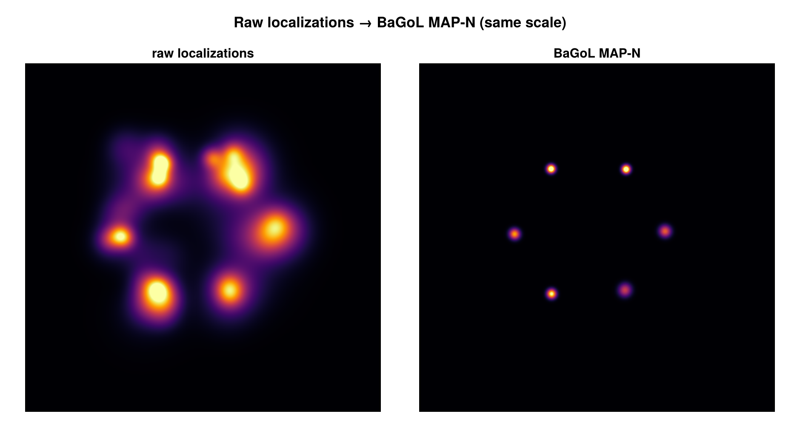

SMLMBaGoL.jl
SMLMBaGoL performs Bayesian Grouping of Localizations (BaGoL) on single-molecule localization microscopy (SMLM) data. A single fluorophore blinks many times during an acquisition, scattering its signal across many localizations; BaGoL groups those localizations back into the individual emitters that produced them, yielding emitter positions at precision beyond that of the raw localizations. It operates on the SMLMData.SMLD structures used across the JuliaSMLM ecosystem.
This package is a Julia reimplementation of the BaGoL algorithm of Fazel et al. (Nature Communications 13, 7152, 2022).
How it works
In an SMLM experiment a single fluorescent emitter blinks repeatedly, so it appears not as one point but as a scatter of localizations spread around its true location. BaGoL treats such localizations as measurements from a mixture of emitters whose number and true positions are both unknown. Given the localizations and their reported uncertainties, it asks: which arrangements of emitters could plausibly have produced this data, and how probable is each? To answer, it runs an MCMC sampler whose reversible-jump (RJMCMC) moves split, merge, create, and remove emitters, exploring models with different emitter counts as it goes.
Rather than committing to a single grouping, BaGoL builds a full posterior probability distribution over both the number of emitters and their positions: the probability of each possible emitter count, a super-resolved posterior image, and a position covariance for each grouped emitter. For downstream analysis we usually summarize this posterior with the MAP-N estimate — the most probable number of emitters, together with a representative grouping of localizations at that count — which pools the localizations assigned to each emitter to reach a position more precise than any single localization.
BaGoL makes two assumptions about the localizations. First, that each localization is a real observation of a single emitter; it follows that any spurious or multi-emitter fits from the upstream analysis pipeline — where one localization stands for two or more emitters — must be removed by preprocessing before BaGoL. Second, that the reported localization precision σ is correct. This second assumption can be relaxed: where σ carries a uniform excess error, estimate_se_adjust estimates it from the data, and se_adjust=:auto folds the excess τ into each localization in quadrature (σ² + τ²) before grouping. The Mathematics section describes the statistics in full.

A simulated hexamer: the raw localizations (left) are an unresolved blur; the BaGoL MAP-N result (right) recovers the six individual emitters at the same scale.
Installation
using Pkg
Pkg.add("SMLMBaGoL")Quick Start
using SMLMBaGoL
using SMLMData
# Group localizations into emitters — returns (BasicSMLD, BaGoLDiagnostics)
result_smld, diagnostics = run_bagol(smld)
# Grouped emitter positions (Emitter2DFit, with posterior uncertainties)
result_smld.emitters
# Posterior summary
diagnostics.n_emitters # MAP-N number of emitters
diagnostics.posterior_k # emitter-count histogram over the chain (normalize for P(K))run_bagol also accepts a Vector of localizations directly, given a camera:
result_smld, diagnostics = run_bagol(locs; camera=camera)Where to go next
- Run it now → the User Guide: inputs and units, the
run_bagoloptions, what comes back and how to tell a run is sane, standard reports, and large-dataset partitioning. - Understand the model → the Mathematics section: a code-grounded breakdown of the collapsed RJMCMC sampler, the priors, MAP-N estimation, and uncertainty correction — split across pages by concept, with figures.
- See results → the Results Gallery: end-to-end runs on simulated data.
- Go low-level → the API Reference: every exported type and function, with the diagnostics and validation tools grouped separately.
Citation
If you use SMLMBaGoL in your research, please cite:
Fazel, M. et al. High-Precision Estimation of Emitter Positions using Bayesian Grouping of Localizations. Nature Communications 13, 7152 (2022). https://doi.org/10.1038/s41467-022-34894-2